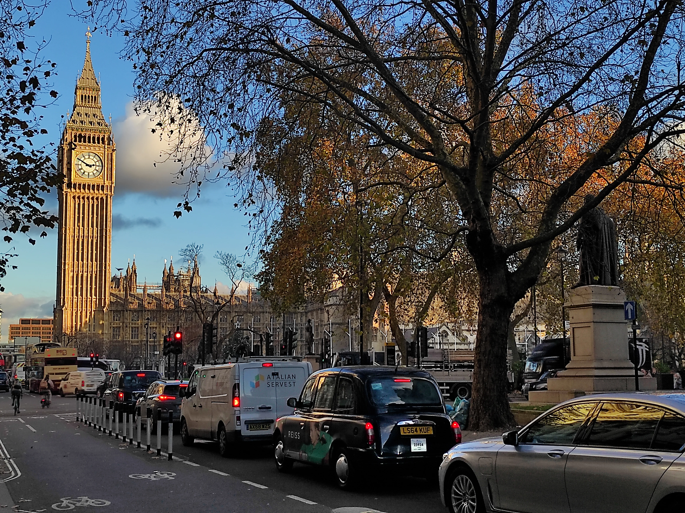

"The stone by which he was seated, bore in large characters an intimation that it was just seventy
miles from that spot to London. The name awakened a new train of ideas in the boy's mind. London!
- the greater place! - nodoby could ever find him there. He had often heard the old men in the workhouse,
too, say that no lad of spirit need want in London, and that there were ways of living in that vast city
which those who had been bred up in country parts had no idea of. It was the very place for a homeless boy,
who must die in the streets unless some one helped him." -Charles Dickens, Oliver Twist-

I. Introduction
II. Random facts in History
III. Truth to nature
IV. pre-Raphaelites
V. The beautiful deaths and the urgency of showing Monet
VI. William Blake and the Vala
VII. Chatterton suicidé, quant à moi Ça ne va plus très bien
VIII. Bloomsbury Group
IX. What should we do for rent?
X. Swinging London
XI. Beatlemania
XII. The "medicine man"
XIII. Brutalism
Tracklist
I. Introduction
Writing about London means to me writing about my life out my hometown for the first time in my early twenties, seeking stories to tell and trying to write my own.
Hyde Park, Notting Hill, Camden Town and Kentish Town were the places were we went out the most since Brixton and Shoreditch were for us mostly still unknown areas.
London in 2005 was different than nowadays but to me it still keeps its unique essence.
I could write an entire book of inspiring characters only mentioning the people I met during that six months living in the Astor Leinster Inn in Bayswater that
probably taught me something in a world still not so digitally connected. Back those days was not easy to find a multicultural microcosmos of people and
my approximate level of english of course did not help. The rent was due week by week (70 pounds p/w) and certain guests stayed there for years.
There were people from all over the world, most of them (me included) living out of casual jobs and carrying on with their artistical ambitions.
For some reasons, we all had very common music tastes, mostly classic rock, switching from Led Zeppelin to the Stones,
Beatles, Ramones, Sex Pistols and Black Sabbaths that were all coming out from a pair of rusty speakers hanging down from the corners of the hall
one after the other, from Somebody put Something in my Drink, walking through the psichedelic Strawberry Fields the line never ends and when I nowadays
take my morning shower listening to Frank Sinatra, A Foggy Day, Van Morrison, Astral Weeks or Damon Albarn, Everyday Robots,
I realise this city still has and always will have its own soul.
Leinster Inn like many other places in the city does not exist anymore, it has been eaten by the frenetic city rhythm and the gentrification and I guess
most of those people live elsewhere nowadays, probably went back to their own countries or somewhere else in the world.
Coming back 10 years after for the first time and three more times afterwards, was the occasion for me to go for my own walk around those that
used to be familiar districts and somehow still are. I have always found fascinating to see people standing on a ladder in Speaker's corner to talk about whatever comes into their mind,
hanging out in Hampstead looking at the heath because that very same picture was on my english book in secondary school and somehow belongs to my own London
or wandering around the beautiful Greenwich park and the Royal Observatory built on top of the Greenwich Prime Meridian and maybe stop on the way back to look
at the Cutty Sark that has been all the way back and forth from China and Australia, doing its clipper's duty in the second half of the XIX century.
Camden Town also hasn't changed that much except from an Amy Winehouse statue built recently but nowadays for some reason I prefer other areas like Clapham, Camberwell or Peckham.
Those areas are mostly new to me and are part of this new era I am living every time I visit London, with twice as many years in my pocket since my very first time but with the very same eager
to discover that I had back then.
From the cinematic perspective, the London of Alfred Hitchcock is one of those I like the most, especially the brutality of the movie Frenzy, set in a London that still looks like
a village or going for something completely different, a huge Disney classic like Mary Poppins and the melancholic street artist Bert (Dick Van Dyke), who is around playing piano in the street, while snowflakes
start to fall has still a huge impact on my imagination.
II. Random facts in History
Saint George the English national hero was born in Cappadocia in the 3rd century AC.
He was likely to be a Roman officer who was executed for refusing to make a sacrifice in honor of
the pagan gods. The Saint George cross started to represent England under the reign of Henry VIII.
The country of Georgia was also named after Saint George, due to the popularity that the saint raised amongst
the people in this part of the world.
The Anglo-Saxons were a cultural group of German descendancy (Saxony), present in Britain from 455 to 1066.
They got in touch with the pre-existing roman britain culture and got along with it. They lasted till the battle of
Hasting of 1066 when they were defeated by the Norman French. The battle lasted only for one day. Normans ruled England
for the next 300 years.
The Hundred Years' War was a period of British history that saw the kingdom of England and France constantly fighting
each other since the origin of the English royal family which was French-Norman. The French victory ended all English
possession on the continent and led to the rejection of everything related to France in England (except the language, partly still used).
Henry the VIII was the king of England between 1509 and 1547. Mostly famous for 6 marriages, the execution of his wife
and for having started Anglicanism and the English reformation when pope Clement VII refused to cancel one of his marriages.
The consequence of the reformation was the separation of the English Church from the Catholic Church. The divine right
of the king grew in exchange of papal supremacy.
English civil wars were mostly three political conflicts between the monarchists, represented by Charles I and the parliamentarians
of the New Model Army, represented by Oliver Cromwell. Those conflicts affected the three kingdoms of England, Scotland and Ireland.
Monarchists were defeated in 1649 and the defeat led to the execution of Charles I and the foundation of the Commonwealth of England.
The East India company was settled around 1600 to trade commodities as cotton, silk, sugar, salt, spices and tea in the Indian ocean
region and east Asia. With the company the British empire of India also sees its debut. The company gained more and more power,
assuming direct control of India around 1868. The British empire “the empire of which the sun never sets” was probably the largest
empire in history and became a fully global power involving around 400 millions people. The empire saw its decline after the world
wars that affected Europe in the XX century.
III. Truth to nature
William Turner is probably the most famous painter of England of all the time.
Born from a lower-middle-class family, he had a very complex, introverted and skeptical personality.
In his life Turner traveled intensively through Europe and was recognised as a painter of superior
level. As a romantic painter, he focused intensively on the force of nature, landscape and natural phenomena.
Turner could be probably mentioned as one of the first impressionist and modern painters.
John Ruskin was an and extremely influencial thinker, art critic and a huge fan of Turner.
In his Modern Painters (1843), he affirmed that the main role of the artist is the truth to nature.
He also supported the pre-Raphaelities, leaving them a strong influence on their works. One of Ruskin's main goal
was to improve the amount of beauty in the english society, in order to improve the quality of people's lives.
Ruskin found most of his inspiration in Venice, a city that he visited regularly and that helped in making
his criticism towards english capitalism and industrialisation even stronger. He was an inspiring figure for many,
amongst their fans apparently there was also Indira Gandhi.
IV. pre-Raphaelites
The pre-Raphaelites movement was formed by a group of English painters in 1848.
The group was standing for intensity and complexion of production, rejecting mannerism
(distortion, asymmetry and tension), a movement that was born in contraposition to classical poses,
mostly “corrupted” by the work of Raphael (at least according to them).
V. The beautiful deaths and the urgency of showing Monet
Ophelia (John Everett Millais, 1851) can be seen as one of the most beautiful examples of this
movement. The intensity, the brightness and the abundance of details in the picture are an example
of pre-Raphaelites style same as the sweetness in which death is represented, the softness in juxtaposition
to the hardness of life, the way Ophelia lets herself go slowly, compliantly and erotically into the
abyss. The way her clothes are slowly filled by water, reminds me a bit of the defeated way in
which Virginia Wolf decides to walk into the river with her pockets full of stones,
for one last epic walk into the darkness. Another character who is very much related to Ophelia as a sort
of female hero victim of her own sensibility is Emma Bovary. Bovary has made guilty of her own pleasure
and every single time she makes a mistake in the strongly judgemental town she lives, she pays an excessive price
that keeps pushing her to the edge, towards her final act. Both victims in this case represent an archetype
of self-destructive woman who can not fight against her own fate and rather lose herself into the abyss.
Ophelia also recalls another famous painting of Claude Monet, the Japanese Footbridge and that takes me to another
contemporary british artist, street artist to be exact, named Bansky.
In his Show me the Monet, the artist mocks and destroys a certain elegance, repainting the picture with some extra objects
that could be taken from a street riot, giving his post-modern contribution to this chain of works of art that somehow have something in common.
VI. William Blake and the Vala
Romanticism has a strong focus on the individual and his emotions and on the relation between the human and the nature. The movement
was born partly as a reaction against industrialisation. William Blake had a very personal opinion on things and was sometimes seen as an eccentric madman.
Blake was very much involved in social politics and despised religion, inventing his own mythology and creating
a sort of a new age movement. Very interesting is also his concept expressed on Vala, where he sees every person
with two identities one good and one bad.
VII. Chatterton suicidé, quant à moi Ça ne va plus très bien
Another important figure of Romanticism was the poet Thomas Chatterton. He lived a very short
and miserable life, poisoning himself for not being able to earn enough to carry a decent life.
His death was beautifully represented by Henry Wallis in “The death of Chatterton” (Tate Britain, 1856).
Chatterton was very inspiring between many artists, Serge Gainsbourg remembered him with the song “Chatterton”.
VIII. Bloomsbury Group
Prominent during the first half of the 20 century, the Bloomsbury group was a group of upper class poets and
thinkers that became influential also for today's society, focusing on topics like feminism, pacifism and sexuality
prioritizing individual pleasure and personal relationships. One of the most well-known figures between the members
of the group was certainly Virginia Woolf.
IX. What should we do for rent?
The Camden Town Group was contemporary to the Bloomsbury group but it was mostly related to painting.
Sources of inspiration were mostly the works of Van Gogh and Gauguin and the topics were often referring to scenes of
everyday life as can be seen in “Camden Town Murder” (1906-1909) by one of the most famous exponents of the movement,
Walter Sickert. Furthermore, Walter Sickert could have been the mysterious identity behind the serial killer Jack the Ripper
and his victims could potentially be the subjects of his paintings.
These works were also inspiring other painters like Francis Bacon,
a very brutal, dark, enigmatic, introspective painter who focused mostly on human shape, distortion and emotions.
X. Swinging London
London West-End in the ‘60 was the European equivalent of the countercultural movement in California.
Modernity, hedonism, political engagement (anti-nuclear and anti-war), art, music and fashion.
Promoted by huge successful bands like the Kinks, Beatles, Rolling Stones, the Who, Cream, Small Faces,
Jimi Hendrix and Pink Floyd that invaded the American music market causing a phenomenon called British Invasion.
XI. Beatlemania
The Beatles were the most influencing band of the movement, therefore the term Beatlemania in order to remark
how people from that and from the next generations were obsessed with the band. Both the Beatles
and the other bands and major artists of the British Invasion movements were influenced by American Rock and Roll mostly from the ‘50.
XII. The "medicine man"
While visiting the British museum in december '24 after almost 15 years from my last visit, I came across a very interesting and
controversial character named Henry Wellcome. The man made his fortune mostly thanks to his pharmaceutical company Burroughs Wellcome,
but what attracted me the most was the countless number of travels around the world he made in order to collect artifacts that he would have used to create
his own collection about medicine, anthropology and health in general. The Wellcome collection is nowadays still one of the largest in the world.
The foundation is located in 183 Euston Road.
XIII. Brutalism
Brutalism is a movement that comes from Modernism and emerged in Great Britain during the years post world-war although the style exists more or less all over the world
in different shades. The reason why architecture made this distinctive turn towards something so "brutal" and hard for the human eye to digest, except from the obvious affordability
that these buildings could give and the urge for post-war reconstruction, are still unknown to me and the best explanation I could find looking online is that the movement was designed
as some sort of a reaction against a certain nostalgia of the 40's architectural style. Politically it seems that the movement in the UK reflected some of the values of a certain kind
of socialism, at least for its purpose of representing the working class and social housing in general even if the style was also used for main infrastructures and other kind of spaces.
Funny enough the name Brutalism comes from a swedish architect commenting on what is considered the first brutalist building, a house in Uppsala (Sweden) called Villa Goth.
London has also quite a few great examples to offer in terms of Brutalism and in particular the ones I had the chance to see are the Royal National Theatre, the Hayward Gallery and the Barbican Center.
During my last stay I had the chance to visit the Barbican, the largest performing art center in Europe, a space which includes various galleries with temporary and fix exhibitions,
various cinemas, a library, a theater and other common areas.